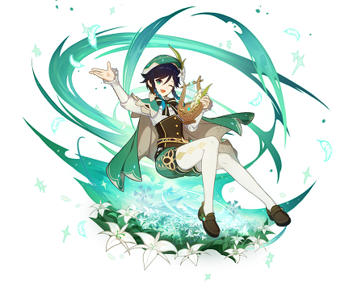
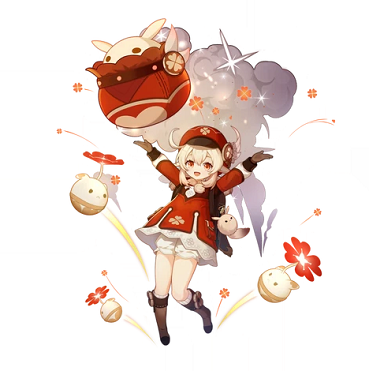
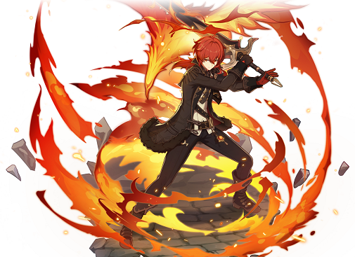
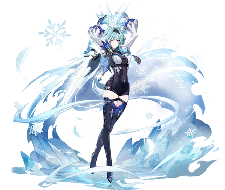
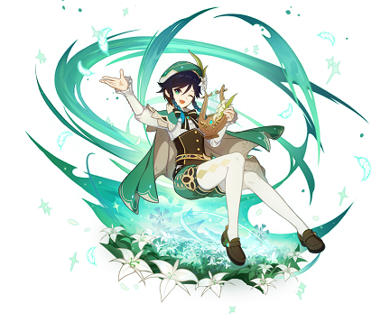
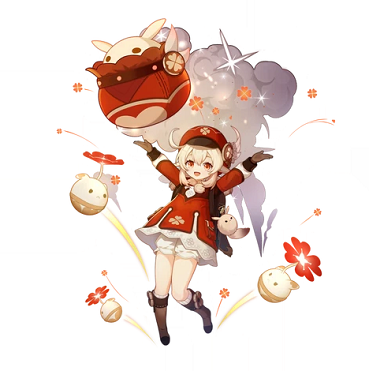
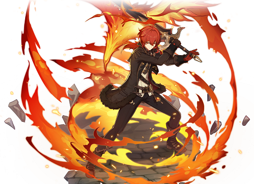
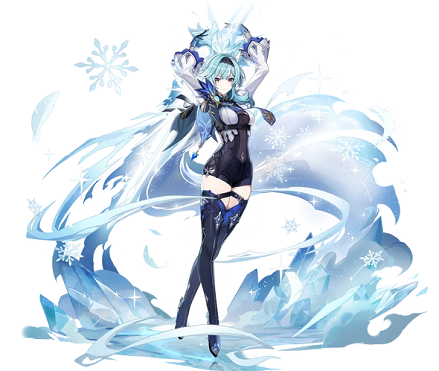

«Genshin Impact» – приключенческая ролевая игра с открытым миром. Вам предстоит исследовать волшебный мир Тейват. На этом огромном континенте вы посетите семь королевств, найдёте спутников с различными умениями и сразитесь с могущественными врагами в поисках пропавшего близкого человека. А ещё можно просто странствовать безо всякой цели, разгадывая тайны наполненного жизнью мира. Пусть любопытство указывает вам путь!